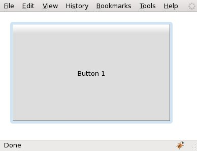
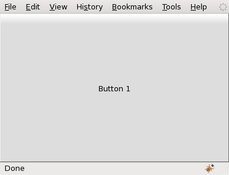

com.google.gwt.user.client.ui.LayoutManagerHelper
org.gwt.mosaic.ui.client.layout.BaseLayout
org.gwt.mosaic.ui.client.layout.FillLayout
com.google.gwt.user.client.ui.LayoutManagerHelper
org.gwt.mosaic.ui.client.layout.BaseLayout
org.gwt.mosaic.ui.client.layout.FillLayout
|
||||||||||
| PREV CLASS NEXT CLASS | FRAMES NO FRAMES | |||||||||
| SUMMARY: NESTED | FIELD | CONSTR | METHOD | DETAIL: FIELD | CONSTR | METHOD | |||||||||
java.lang.Object
public class FillLayout
FillLayout lays out the first visible widget forcing it to completely
fill the available space. The widget that FillLayout lays out can
have an associated layout data object, called FillLayoutData.
FillLayout is the default layout manager for LayoutPanel. In
the following example two Buttons are placed inside a
LayoutPanel. Notice that only the first Button is rendered.
The associated layout data object declares that the Button will be
decorated (the Button will be placed inside a
com.google.gwt.user.client.ui.DecoratorPanel):
|  |
public void onModuleLoad() {
LayoutPanel panel = new LayoutPanel();
panel.setPixelSize(320, 200);
panel.setPadding(20);
panel.add(new Button("Button 1"), new FillLayoutData(true));
// This button is not rendered!
panel.add(new Button("Button 2"), new FillLayoutData(true));
RootPanel.get().add(panel);
}
|
In the next example a Button placed inside a Viewport is
sized to completely fill the browser's content area:
|  |
public void onModuleLoad() {
Viewport viewport = new Viewport();
viewport.add(new Button("Button 1"));
RootPanel.get().add(viewport);
}
|
FillLayoutData| Constructor Summary | |
|---|---|
FillLayout()
|
|
| Method Summary | |
|---|---|
int[] |
getPreferredSize(LayoutPanel layoutPanel)
Computes and returns the size of the LayoutPanel according to this
layout. |
void |
layoutPanel(LayoutPanel layoutPanel)
Lays out the specified LayoutPanel according to this layout. |
| Methods inherited from class org.gwt.mosaic.ui.client.layout.BaseLayout |
|---|
getFlowHeight, getFlowWidth, getLayoutData, runTwice, setBounds, setLayoutData, setSize, setXY |
| Methods inherited from class com.google.gwt.user.client.ui.LayoutManagerHelper |
|---|
_getLayoutData, _setLayoutData |
| Methods inherited from class java.lang.Object |
|---|
clone, equals, finalize, getClass, hashCode, notify, notifyAll, toString, wait, wait, wait |
| Constructor Detail |
|---|
public FillLayout()
| Method Detail |
|---|
public int[] getPreferredSize(LayoutPanel layoutPanel)
LayoutManagerLayoutPanel according to this
layout.
This method computes the preferred size that the client area of the
LayoutPanel must be in order to position all children at their
preferred size inside the panel according to the layout algorithm encoded
by this layout.
TODO: caching of child preferred sizes
layoutPanel - a LayoutPanel widget using this layout.
{width, height}) containing the computed size.public void layoutPanel(LayoutPanel layoutPanel)
LayoutManagerLayoutPanel according to this layout.
This method positions and sizes the children of a LayoutPanel using
the layout algorithm encoded by this layout. Child widgets of the
LayoutPanel are positioned in the client area of the panel. The
position of the LayoutPanel is not altered by this method.
TODO: caching of child preferred sizes
layoutPanel - the LayoutPanel to be laid out
|
||||||||||
| PREV CLASS NEXT CLASS | FRAMES NO FRAMES | |||||||||
| SUMMARY: NESTED | FIELD | CONSTR | METHOD | DETAIL: FIELD | CONSTR | METHOD | |||||||||